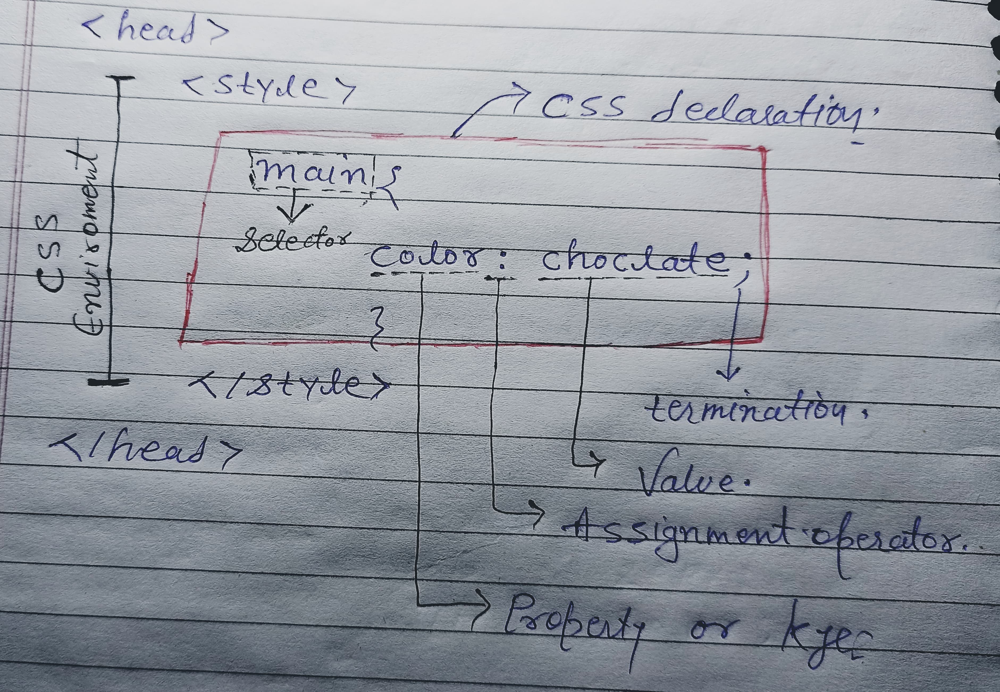

Namaste Developers...!
I am learning CSS
Hello, I am the <main> tag.
I am the <pre> tag. I preserve spaces and line breaks.
Class Notes on CSS
-
CSS stands for
Cascading Style Sheets.
-
Cascading means "priority-based rules" where multiple
styles can be applied, and the one with the highest priority wins.
-
color: red; → "color" is the
property, ":" is the
assignment operator, "red" is the
value, ";" is used to end the rule.
-
Style means applying beautification to your web page.
-
Sheet refers to a document containing CSS code.
-
CSS was developed by Håkon Wium Lie in 1994 and
officially released in 1996.
-
He was the CTO of CERN (same organization where the
World Wide Web was invented).
Types of CSS
-
Inline CSS
Applied directly inside an HTML tag using the
style attribute.
Example:
<p style="color: red;">Text</p>
✅ Used for quick styling. ❌ Not reusable and hard to maintain.
-
Internal CSS
Defined inside a <style> tag within the
<head> section of the HTML document.
Example: #main { color: blue; }
✅ Good for single-page styling. ❌ Not ideal for multiple pages.
-
External CSS
Stored in a separate .css file and linked to the HTML
file using a <link> tag placed inside the
<head> section.
Example:
<link rel="stylesheet" href="style.css">
- "rel="stylesheet" : The rel attribute
stands for "relationship". It tells the browser that the linked file
is a CSS stylesheet.
-href : = "style.css": The
href attribute stands for "Hypertext Reference" and
provides the path to the CSS file. This file contains the styling
rules that will be applied to the HTML content.
